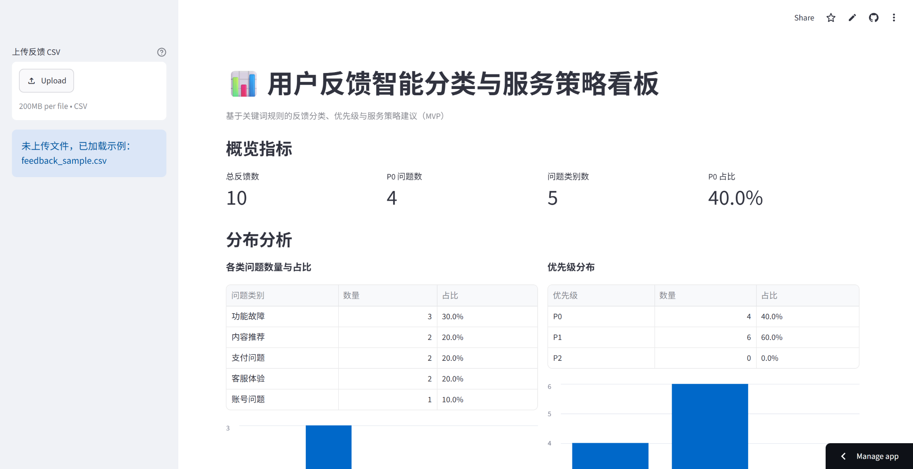
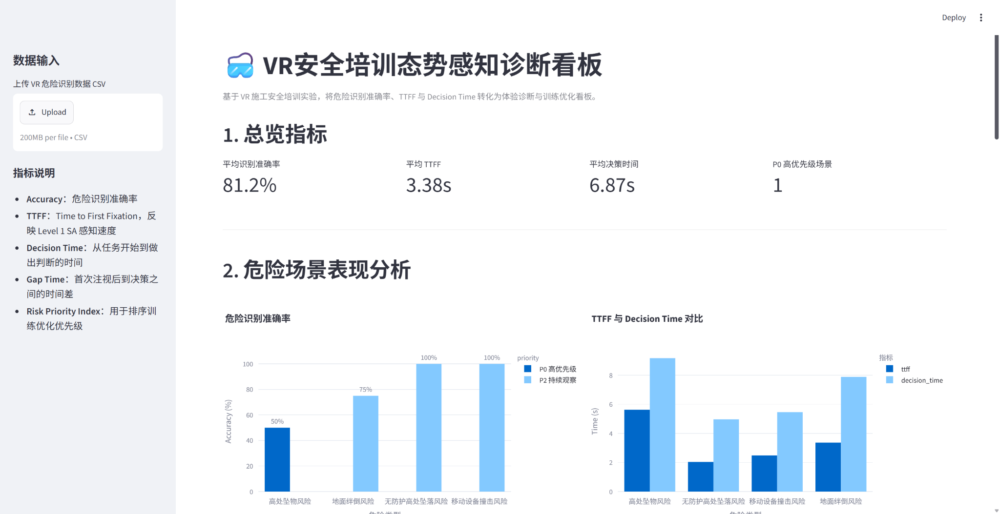
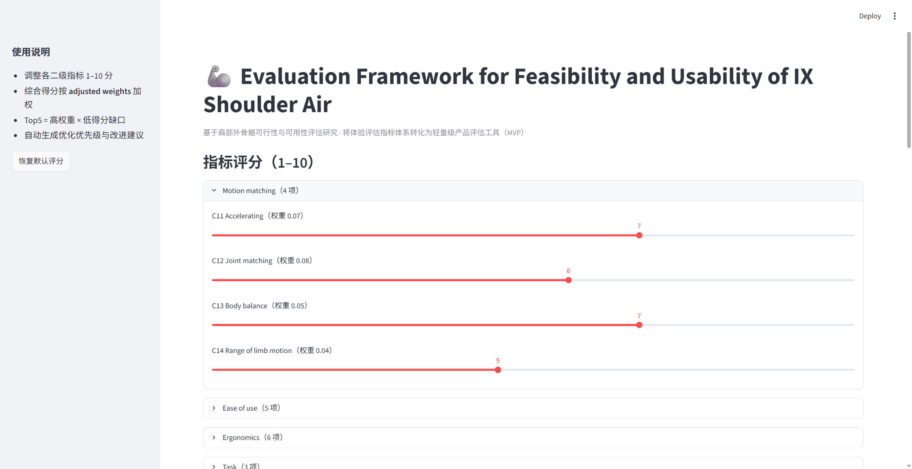

🎓 教育背景： 香港理工大学 · 智能建造硕士 (一等荣誉学位) | 重庆大学 · 本科
🔬 研究方向： XR 交互 · 眼动追踪 · 认知行为分析 · Unity · 实验设计与用户研究
基于 Python + Streamlit 搭建的 AI-Coding Demo，用于模拟 C 端服务场景下的用户反馈分类、优先级判断与服务策略输出流程。
核心功能： 自动将用户反馈归类为账号问题、内容推荐、支付问题、功能故障、客服体验等类别，并生成 P0/P1/P2 优先级。
指标输出： 展示总反馈量、P0问题数、问题类别数、P0占比、问题类别分布与优先级分布，辅助识别高优先级服务痛点。

基于眼动追踪实验，优化VR教育安全培训场景中的新手引导流程。
研究方法： 设计危险识别任务，采集首次注视时间(TTFF)、瞳孔直径、决策时间等指标，评估用户态势感知与认知负荷。
核心发现： 静态远距离危险物的感知延迟最显著（5.8s vs 平均2.5s），识别高认知负荷场景与风险转移路径。
设计方案： 提出视觉提示强化策略、新手引导优化与反馈机制改进方案，输出高保真交互原型。

构建面向施工场景的肩部外骨骼可用性评估框架，并使用 AI-Coding 辅助将 AHP-EW 多指标评价方法转化为 Python + Streamlit 轻量级产品决策看板。
研究方法： 建立覆盖 Motion matching、Ease of use、Ergonomics、Task、Suitability 五个一级维度的体验评价体系，结合 AHP-EW 权重分析。
核心发现： 识别相对位移、关节错位、外部物体缠绕风险、PPE 兼容性等关键痛点，通过“高权重 × 低得分缺口”形成优化优先级。

基于TISM理论，分析香港MiC推广中的挑战与关键影响因素。
研究方法： 运用TISM构建层次结构模型，识别核心挑战与驱动因素，分析因素间的传递关系与影响路径。
核心发现： 定位政策协同、供应链整合、成本控制等关键瓶颈，提出分阶段推广策略建议。
基于BESO双向渐进结构优化方法，对桥梁结构进行拓扑优化，结合粒子流仿真与SLA 3D打印技术，完成从概念设计到实物落地的全流程验证。
核心成果： 体积减少70% · 重量减轻60% · 确定2.5m最优桥宽 · SLA树脂打印
研究方法： BESO拓扑优化 · 粒子流仿真 · 有限元负载计算 · 工艺对比选型
我的贡献： 负责拓扑优化模块，使用Ameba进行迭代计算；完成不同网格密度与体积分数对比测试；参与1:100缩尺模型负载计算；输出优化模型用于3D打印。
📧 联系我： munnwong@163.com | yuet1997@gmail.com